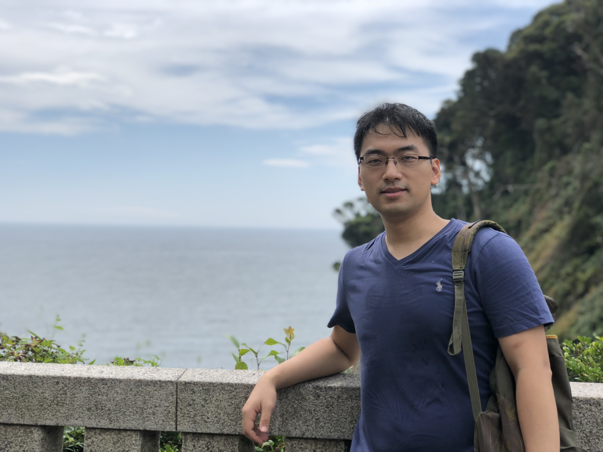

Wang Zhe 王哲
Email: wangzhe at sensetime dot com |
 |
Short Bio
Currently I am a Director in the Intelligent Automative Group at SenseTime. Our 3D perception team is responsible for developing accurate and reliable perception systems for autonomous driving. We are mainly focusing on Lidar based perception, camera-based general object perception and sensor fusion. We are also interested in various challenges in autonomous driving, such as mapping and localization and monocular/stereo/multi-view 3D object detection.
I obtained my Ph.D. degree from EE department of CUHK in 2017, supervised by Professor Xiaogang Wang . I was both in IVP lab and Multimedia Lab.
Before I came to CUHK, I received a Bachelor's degree from the department of Optical Engineering of Zhejiang University (ZJU) in July 2012.
I am now recuiting self-motivated interns / full-time researchers or software engineers with strong machine learning background and programming skills. If you are interested, please send your CV to my Email (wangzhe@sensetime.com)
News
-
I gave a talk on 智东西公开课. I mainly shared some recent progress of our General Object Perception (GOP) project for autonomous driving (2022.7.22).
-
One paper accepted by IJCV (2022.2).
-
One paper accepted by CVPR (2022.2).
-
One paper accepted by 3DV (2021.12).
-
One paper accepted by TCSVT (2021.5).
-
One paper accepted by ICLR (2021.3).
-
One paper accepted by CVPR (2021.3).
Competitions
- No. 1 in DAVIS Challenge on Video Object Segmentation 2017. [code] [project]
- No. 1 in ImageNet Object Detection Challenge 2016. poster
- No. 1 in ImageNet Object Detection from Video Challenge 2015. poster | slides
- No. 2 in ImageNet Object Detection Challenge 2015. poster
- No. 2 in ImageNet Object Detection Challenge 2014. slides
Publications [Google Scholar]
Shaoshuai Shi, Chaoxu Guo, Li Jiang, Zhe Wang, Jianping Shi, Xiaogang Wang, Hongsheng Li, "PV-RCNN: Point-Voxel Feature Set Abstraction for 3D Object Detection", IEEE Conference on Computer Vision and Pattern Recognition, (CVPR), 2020 [code]
Ranks 1st on KITTI 3D object detection benchmark on Jan. 9th, 2020
Mingyu Ding, Yuqi Huo, Hongwei Yi, Zhe Wang, Jianping Shi, Zhiwu Lu, Ping Luo, "Learning Depth-Guided Convolutions for Monocular 3D Object Detection", IEEE Conference on Computer Vision and Pattern Recognition, (CVPR), 2020
Ranks 1st on KITTI monocular 3D object detection benchmark on Nov. 11th, 2019
Shaoshuai Shi, Zhe Wang, Xiaogang Wang, Hongsheng Li, "From Points to Parts: 3D Object Detection from Point Cloud with Part-aware and Part-aggregation Network", IEEE Transactions on Pattern Analysis and Machine Intelligence, (TPAMI), 2020 [code]
Ranks 1st on KITTI 3D object detection benchmark on July. 9th, 2019
Wenwei Zhang, Hui Zhou, Shuyang Sun, Zhe Wang, Jianping Shi, Chen Change Loy, "Robust Multi Modality Multi-Object Tracking", International Conference in Computer Vision (ICCV), 2019
Mingyu Ding, Zhe Wang, Jiankai Sun, Jianping Shi, Ping Luo, "CamNet: Coarse-to-Fine Retrival for Camera Relocalization", International Conference in Computer Vision (ICCV), 2019 [code]
X. Li, Y. Qi, Z. Wang, K. Chen, Z. Liu, J. Shi, P. Luo, C. Change Loy, X. Tang, "Video Object Segmentation with Re-identification", The 2017 DAVIS Challenge on Video Object Segmentation - CVPR Workshops (1st place), 2017.
Zhe Wang, Yanxin Yin, Jianping Shi, Wei Fang, Hongsheng Li, Xiaogang Wang, "Zoom-in-Net: Deep Mining Lesions for Diabetic Retinopathy Detection", International Conference on Medical Image Computing and Computer-Assisted Intervention (MICCAI), 2017.
K. Kang, J. Yan, X. Zeng, B. Yang, T. Xiao, C. Zhang, Z. Wang, R. Wang, X. Wang, W. Ouyang. "T-CNN: Tubelets with Convolutional Neural Networks for Object Detection from Videos", IEEE Transactions on Circuits and Systems for Video Technology (TCSVT), 2017.
W. Ouyang, X. Zeng, X. Wang, S. Qiu, P. Luo, Y. Tian, H. Li, S. Yang, Zhe Wang, et al. "DeepID-Net: Object Detection with Deformable Part Based Convolutional Neural Networks", IEEE Transactions on Pattern Analysis and Machine Intelligence (TPAMI), 2017.
X. Zeng, W. Ouyang, J. Yan, H. Li, T. Xiao, K. Wang, Y. Liu, Y. Zhou, B. Yang, Zhe Wang, H. Zhou, X. Wang. "Crafting GBD-Net for Object Detection", IEEE Transactions on Pattern Analysis and Machine Intelligence (TPAMI), 2017.
Zhe Wang, H. Li, W. Ouyang, X. Wang. "Learnable Histogram: Statistical Context Features for Deep Neural Networks", European Conference on Computer Vision (ECCV), 2016. (poster)
W. Ouyang, X. Wang, X. Zeng, S. Qiu, P. Luo, Y. Tian, H. Li, S. Yang, Zhe Wang, C. Loy, X. Tang. "DeepID-Net: Deformable Deep Convolutional Neural Networks for Object Detection", In Proc. CVPR 2015.
Professional Activities
Journal Reviewer-
TCSVT, TBME, MIA, etc
-
CVPR 2018~2020, ICCV 2019~2021, ECCV 2020, MICCAI 2018~2019, etc.